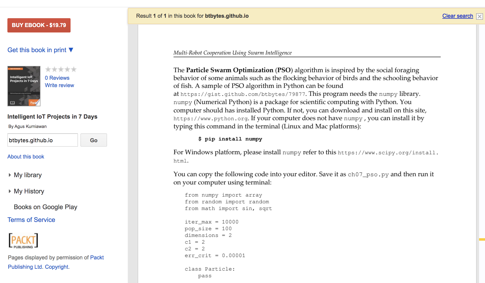
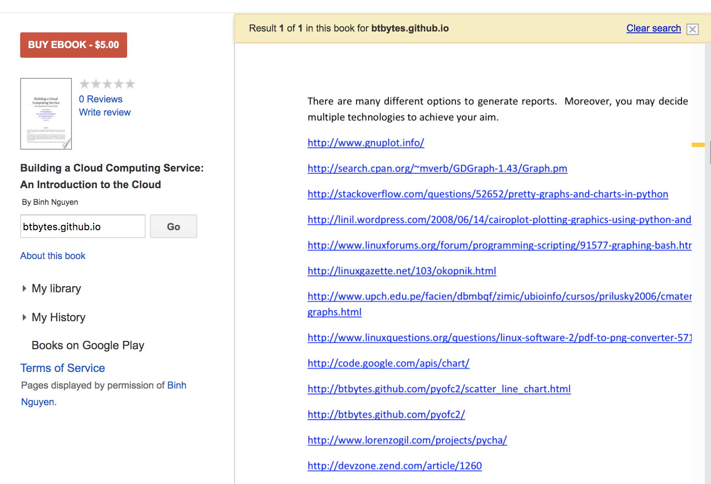

2020-05-07 My code in books
During a “vanity search” of this blog “btbytes.github.io”, I found out that some of my code have been quoted in published books:
(A Particle Swarm Optimization) implementation in Python in “Intelligent IoT Projects in 7 Days”. I remember writing this code for Dr Eberhart’s “Computation Intelligence” class at IUPUI.

The code in question:
#!/usr/bin/env python
'''
pso.py
A simple implementation of the Particle Swarm Optimisation Algorithm.
Uses Numpy for matrix operations.
Pradeep Gowda 2009-03-16
'''
from numpy import array
from random import random
from math import sin, sqrt
iter_max = 10000
pop_size = 100
dimensions = 2
c1 = 2
c2 = 2
err_crit = 0.00001
class Particle:
pass
def f6(param):
'''Schaffer's F6 function'''
para = param*10
para = param[0:2]
num = (sin(sqrt((para[0] * para[0]) + (para[1] * para[1])))) * \
(sin(sqrt((para[0] * para[0]) + (para[1] * para[1])))) - 0.5
denom = (1.0 + 0.001 * ((para[0] * para[0]) + (para[1] * para[1]))) * \
(1.0 + 0.001 * ((para[0] * para[0]) + (para[1] * para[1])))
f6 = 0.5 - (num/denom)
errorf6 = 1 - f6
return f6, errorf6;
#initialize the particles
particles = []
for i in range(pop_size):
p = Particle()
p.params = array([random() for i in range(dimensions)])
p.fitness = 0.0
p.v = 0.0
particles.append(p)
# let the first particle be the global best
gbest = particles[0]
err = 999999999
while i < iter_max :
for p in particles:
fitness,err = f6(p.params)
if fitness > p.fitness:
p.fitness = fitness
p.best = p.params
if fitness > gbest.fitness:
gbest = p
v = p.v + c1 * random() * (p.best - p.params) \
+ c2 * random() * (gbest.params - p.params)
p.params = p.params + v
i += 1
if err < err_crit:
break
#progress bar. '.' = 10%
if i % (iter_max/10) == 0:
print '.'
print '\nParticle Swarm Optimisation\n'
print 'PARAMETERS\n','-'*9
print 'Population size : ', pop_size
print 'Dimensions : ', dimensions
print 'Error Criterion : ', err_crit
print 'c1 : ', c1
print 'c2 : ', c2
print 'function : f6'
print 'RESULTS\n', '-'*7
print 'gbest fitness : ', gbest.fitness
print 'gbest params : ', gbest.params
print 'iterations : ', i+1
## Uncomment to print particles
#for p in particles:
# print 'params: %s, fitness: %s, best: %s' % (p.params, p.fitness, p.best)
That’s in Python2.x. Should probably rewrite it in Python3 one of these days.
A link to my PyOFC2 Python charting library in “Building a Cloud Computing Service: An Introduction to the Cloud”.

programming
2020-05-06 My Happy Python Workflow
This is my current python programming workflow. I’m quite happy with it. I constantly try to get better.
- I use Python3.x for all new projects.
- I use SublimeText3(ST3) for editing.
- I use Two ST3 plugins –
Anaconda and PyYapf.
- Anaconda catches things like unused variables, syntax errors, and PEP8 violations.
- I use PyYAPF formatting compulsively.
- ..and “Highlight Trailing Whitespace”, I find trailing whitespace unpleasant.
- I take PEP8 warnings seriously and try to keep
pyflakes happy.
- Vim in the shell. No plugins.
- Start with a
README.md in the project, even if it is a single file project.
- I always use
virtualenv; Pipenv is a quick way to spin one up in the development environments.
- Always capture the dependencies in
requirements.txt, unless I’m writing a setup.py
- Writing a
setup.py file is a great idea, and I should do it more often.
- I always write a
Makefile.
- For Python projects, the common “targets” are –
deps (for creating venvs and installing package dependencies), package (for packaging into tarballs and wheels) and test to run the test suite.
- The
Makefile serves as contextual memory.
- For “scripting” applications, I like to avoid using third party libraries as much as possible and keep to the standard library.
- I like providing a CLI interface to my scripts; I use
argparse often, even if it is to provide basic --help.
click looks neat, and I can see using it more often for larger projects.docopt has fallen out of favour. Too fidgety for my taste.- I tried
python-poetry for one project, and I like what it does.
- I like putting package versions in my
setup.py files. I don’t know if “Semantic versioning” is still a thing, but I like the x.y.z format, so I’m sticking to it.
- Any program that is big enough to have a setup.py file will also have CLI entry_points.
- I prefer writing small, self contained functions.
- I wouldn’t write a class unless I feel like I’m passing around too many variables between functions.
- I like putting unit testing in the same file as the code, if it’s a single file program.
- doc tests seemed like a good idea, but unit tests are a good way to grow the tests without redoing the doc tests.
- I have started writing type annotations, though nowhere near where I could be.
- I love
f-strings. I never seemed to remember the right way to call format strings before I got used to f-strings, though .format came earlier.
- I don’t like long variable names, especially ones with
camelCase; snake_case for me please.
- I use single character variable names when their meaning is clear from the context.
- I seldom read code without rewriting some parts of it. Many times the changes do become pull requests.
- I don’t like commented out code in middle of programs.
- I’m still not good with the
async stuff.
- I prefer using multiprocessing over threads. I don’t remember the last time I wrote Python threading code.
- I’m team single-quotes ’. I like when my string look like –
'hello, world!' instead of "hello, world!".
- I haven’t used the walrus operator yet.
- I always write “dunder main”(
__main__), unless its a throw away script (or a would’ve-been-a-bash-script script).
- You won’t catch me manipulating “path” to insert dependent library locations. I know how to use packages and virtualenvs.
- 4 spaces. No TABs characters in my programs. I do use the TAB key to tell the editor to indent appropriately.
python
2020-05-06 github codespaces
The announcement of github Codespaces made me think of why I almost always default to programming in Python. One is definitely familiarity. But, I think the bigger issue (for me, at least) is that the default Python I have on most machines I work on is sufficient enough to be productive right away.
I use sublime text for editing python, which is quite fast to startup and the two python plugins – anaconda and PyYAPF is sufficient for me to be very productive with Python.
There are a ton of languages that I’d like to try to build my programming muscles over time by writing small programs, but this “goldilocks” environment has prevented from doing so.
I hope things like github codespaces can allow me capture the “works great for me setup” in a config file(s), and thus allow me to jump into a project quickly and start coding away and not worry about the right language version (ruby), right interpreter (javascript), right “module” setup (go), right standard library(OCaml), easy to install libraries (haskell) etc.,
programming
2020-05-05 Just-what-you-need blogging with bari
I write this blog using a combination of pandoc, make and a small-ish python script called bari.
It is easy for me to design, write and maintain my own code than inherit someone else’s assumptions and “wants” for their software.
I saw another blog https://blog.notryan.com/ that is also written in a similar spirit – uses only C, and a bash script to generate a “text only” blog and RSS feed.
So, go on, write your own little program(s) to do what you need to get writing. Some of it is yak-shaving; but some yaks are small, some of you are expert shavers. You will figure it out.
2020-05-05 Building Go Programs with Source File Hash baked in
Imagine a scenario where you are trying to replace a script written in Bash with Go. Lets assume for the sake of this disucssion the following:
- This program is longer than what you are comfortable maintaining in Bash/Perl/Python
- This program has library dependencies
- The target deployment system does not have a “devops” setup to install required dependencies (or has an older version of the OS)
- The script does not change often
- The “deployment” consists of copying/syncing/
git pull script into the target machine.
- The target system does not have a golang compiler
Writing the “scripts” that fit the above criteria in Go looks like a win. You get:
- static typing, and developer productivity tooling & apparatus
- single deployable binary (that you can commit along with the source)
- dependencies baked in
The one issue with checking in the binary with source code is, you can’t be sure if the binary is built with the latest source that is adjacent to it.
Essentially, this is what we want to have:
$ sha256sum hello.go
0246c2bce7473e5c02e8ef510ff89e7ef5aedf74ffb7df66cdb19acb433d24aa hello.go
The sha256sum of the source file is - 0246c2bce7473e5c02e8ef510ff89e7ef5aedf74ffb7df66cdb19acb433d24aa.
Let’s say we have a binary hello, that is adjacent to this source file, that we assume to be compiled from this source file.
What if we could verify that?
$ ./hello -v
0246c2bce7473e5c02e8ef510ff89e7ef5aedf74ffb7df66cdb19acb433d24aa
If the program prints the same hash, we can assume that they match.
What if there was a way to “bake-in” the hash of the source file into the binary? We can.
// hello.go
package main
import (
"fmt"
)
var sourcehash string
func main() {
fmt.Println(sourcehash)
}
Build step:
$ export SOURCEHASH=`sha256sum hello.go | cut -d' ' -f1`
$ go build -ldflags "-X main.sourcehash=$SOURCEHASH"
Verify:
$ ./hello
7fffa4353f81b58c682e5b33ec7d720cc6db8e469a10d6fc5f31e11eafaa9104
NOTE: there is nothing stopping you from passing in any value to -ldflags. This meant to be in an environment where you have complete control of the source, binary and the build process, and you are adding something to the build output to help you later on (in case of a doubt).
I was wondering if I could do this and found the answer on SO.
golang